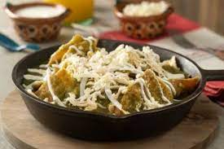

Este platillo típico mexicano es ideal para desayunos y comidas. No requiere de
mucha práctica y es sencillo de preparar.
Tiempo estimado de preparación: 25 minutos.
Ingredientes
- Ocho tomates verdes
- Un cuarto de cebolla picada finamente
- Dos dientes de ajo
- Tres chiles serranos
- Dos tazas de caldo de pollo
- Sal al gusto (de la que comes, ¡no que salgas de tu casa!)
- Cinco tortillas (la cantidad puede variar)
- Dos huevos (opcionales)
- Cualquier queso de preferencia
- Aceite
Preparación de la salsa
- Hierve los tomates en agua durante 10 minutos
- Asa los chiles, la cebolla y el ajo en un comal o sartén hasta que
tomen un color dorado parejo.
Coloca los tomates verdes en la licuadora
junto con la verdura recientemente asada y licúa todo hasta que sea una
mezcla homogénea.
- Vierte la salsa en una olla, agrega el caldo de pollo, sal y cocina a fuego
medio durante ocho minutos.
- Retira la salsa del fuego y mezcla hasta que todo esté bien incorporado
Preparación de los totopos y chilaquiles
Mientras se hierven los tomates o se asan las verduras, puedes aprovechar para
freir las tortillas y obtener totopos.
- Primero que nada, agarra todas las tortillas.
- Después, pártelas por la mitad repetidamente hasta que obtengas
pedazos de tortilla con forma de triángulo.
- Una vez que estén listas, échalas en un sartén y friélas con aceite
hasta que estén doradas.
- Si quisieras agregar huevos, cocínalos como más te gusten.
- Por último, vierte las tortillas en la salsa que preparaste antes.
- Revuelve periódicamente para que todas los totopos se empapen de salsa.
Ahora sí, tienes todo listo, solo falta servir.
Agarra los chilaquiles, sirve en tu plato, agrega la cantidad de queso que deees
y sirve los huevos arriba, por si quisiste prepararlos
¡Disfruta!
Regresar al inicio de la página
Regresar a la página principal